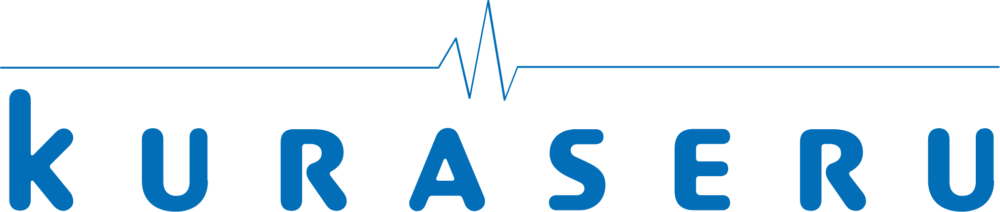
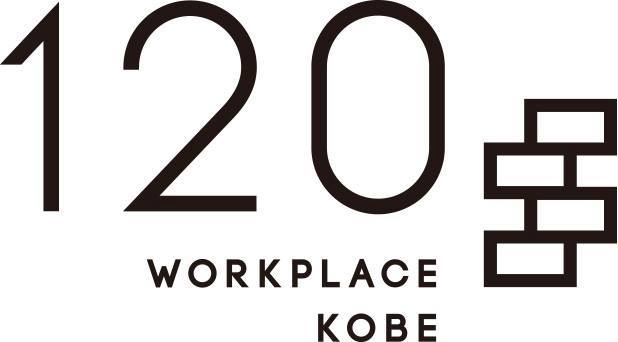

こんにちは世界！
4回目の Rails Girls Kobe が開催されます！
2日間のワークショップで、Ruby on Rails を使った Webアプリケーション作りを体験してみませんか？
ワークショップは無料です。
Hello world!
Rails Girls comes to Kobe again! During the free two-day workshop we'll dive into the magical world of Ruby on Rails!
概要
コーチにプログラミングのルールや Webアプリケーションの仕組みを教えてもらいながら、簡単なWebアプリケーションを作りを体験します。
必要なもの
自分のノートパソコン(WindowsでもMacでもOK!)と、やる気とキラリと光るイマジネーションを持ってきてください！
コーチとしてお手伝いいただける方を募集しています！
お手伝いいただける方はこちらからお申し込みをお願いいたします。
| 18:30開場 ～ |
インストール・ディまずは、参加者同士、お互いに知り合いになりましょう。ご自分のノートパソコンをお持ちください。 それぞれのパソコンにRubyとRailsをインストールし、Rubyプログラミングの最初の一歩をコーチとともに始めてみましょう。 |
|---|
| 9:30 - 10:30 |
レジストレーション、コーヒー土曜日にRuby on Railsのインストールトラブルがあれば、朝のうちに解決しておきましょう。 土曜日にすべてうまく行ったひとは参加しなくてもOKです。 |
|---|---|
| 10:30 - 10:40 |
開会一日の流れの説明。オーガナイザーから一言。 |
| 10:40 - 11:00 |
みんなで記者会見各テーブルで自己紹介をしていただきます。 |
| 11:00 - 12:00 |
ワークショップ |
| 12:00 - 13:00 | ランチ |
| 13:00 - 14:00 |
ワークショップ |
| 14:00- 14:30 |
ライトニングトークス |
| 14:30 - 15:30 |
ワークショップ |
| 15:30 - 15:40 |
コーヒーブレイク |
| 15:40 - 17:00 |
ワークショップ |
| 17:00 - 17:20 |
閉会 |
| 18:00 - 20:00 |
アフター・パーティ参加者、コーチ、スタッフによるパーティです。ワークショップで聞き損ねたことや RubyやRailsのこと、ステップアップの方法など、コーチに気軽に質問してみましょう。 |
参加費はどのくらいかかりますか？
無料です。申し込むときにはわくわくした気持ちだけあればいいです。
どのような人が参加するのでしょうか？
コンピュータを使ったことがある女性ならだれでも参加できます。
これまでに開催されたRailsGirlsイベントには様々な年齢の女性がやってきました。
ご自分のノートパソコン(WindowsでもMacでもOK)をお持ちください。
男性も参加できますか？
参加できます。ただし、必ずウェブアプリを作りたがっている女性と一緒に参加してください。
申し込み人数が多い場合はお断りすることがありますので、ご了承ください。
参加申し込みは締め切らせていただきました。
多数のお申し込み、ありがとうございました！
次回開催のお知らせを受け取りたい場合は にご登録ください :)
日程:
2019年1月26日(土) 18:00 開場 ～ (順次開始)
2019年1月27日(日) 9:30 開場(10:30 開始) ～
会場:
120 WORKPLACE KOBE
各線三宮（三ノ宮）駅より徒歩８分
RailsGirls Kobe はご支援いただけるパートナーを募集しております。こちらのフォームからご応募ください。
RailsGirls Kobe は以下のすばらしいパートナーとの共同開催です。
 株式会社KURASERU は、病院と介護施設のマッチングサービス ｢KURASERU｣を運営する神戸市注目のスタートアップです。 Ruby on Railsを用いて超高齢化社会となった日本最大の課題を解決したいエンジニアを募集中です！
 120 WORKPLACE KOBE は、人、人脈、仕事、未来を築く会員制レンタル・シェアオフィスです。 新しい刺激に溢れ、新たな発想を生み出すワークスペースを提供しています。
合同会社ファイブエッグス は、神戸のRubyコミュニティ育ちの会社です。主にRuby on Railsを利用したWebアプリケーションを開発しています。
 合同会社ユーキューブ
は、神戸でWebコンサルティングや、Ruby on Railsを使ったシステムの受託開発をしています。
Railsを勉強しながら実務経験を積みたいという方に、タイミングによってはお仕事紹介できる可能性がありますのでお気軽にお声がけください。
合同会社ユーキューブ
は、神戸でWebコンサルティングや、Ruby on Railsを使ったシステムの受託開発をしています。
Railsを勉強しながら実務経験を積みたいという方に、タイミングによってはお仕事紹介できる可能性がありますのでお気軽にお声がけください。
 株式会社ソニックガーデン
は、お客さまのビジネスの成長をソフトウエアで支える「納品のない受託開発」を提供しています。
お客さまのパートナーとして ビジネスの立ち上げに必要なソフトウェアの 企画開発から運用まですべて請け負います。
株式会社ソニックガーデン
は、お客さまのビジネスの成長をソフトウエアで支える「納品のない受託開発」を提供しています。
お客さまのパートナーとして ビジネスの立ち上げに必要なソフトウェアの 企画開発から運用まですべて請け負います。
 Mika Tanaka
Mika Tanaka Miyuki Higashi organizer
@miiyukii
Miyuki Higashi organizer
@miiyukii
 Aki
Aki Yoshito Tanaka
Yoshito Tanaka Keiko YADA
Keiko YADA  Masatoshi Moritsuka
Masatoshi Moritsuka  Masaru Taira
Masaru Taira Hiroyuki Fujiwara
Hiroyuki Fujiwara 村瀬洋介
村瀬洋介 伊藤淳一
伊藤淳一 なかにしゆう
なかにしゆう Tatsuya OGI
Tatsuya OGI higaki
higaki